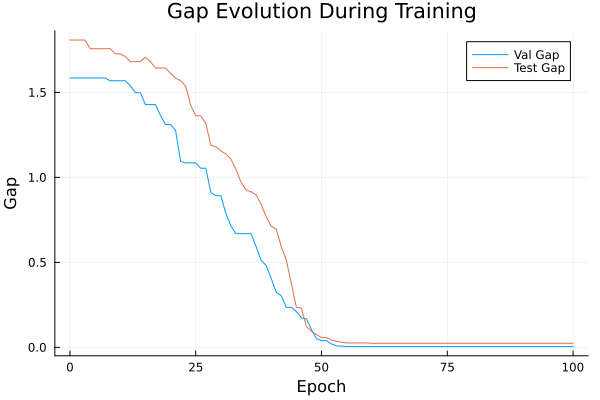
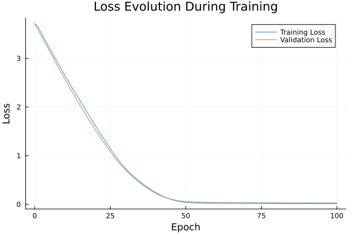

Basic Tutorial: Training with FYL on Argmax Benchmark
This tutorial demonstrates the basic workflow for training a policy using the Perturbed Fenchel-Young Loss algorithm.
Setup
using DecisionFocusedLearningAlgorithms
using DecisionFocusedLearningBenchmarks
using MLUtils: splitobs
using PlotsCreate Benchmark and Data
b = ArgmaxBenchmark()
dataset = generate_dataset(b, 100)
train_data, val_data, test_data = splitobs(dataset; at=(0.3, 0.3, 0.4))(DecisionFocusedLearningBenchmarks.Utils.DataSample{@NamedTuple{}, @NamedTuple{}, Matrix{Float32}, Vector{Float32}, Vector{Float32}}[DataSample(x=Float32[0.81011 0.411333 … -1.09501 0.329646; 0.183178 0.854333 … 0.738277 -2.50128; … ; -1.36316 -0.74809 … 2.30231 1.9622; 1.7465 -0.502217 … -1.21697 -0.22278], θ=Float32[-1.35587, 0.500748, -1.49918, 0.523482, -1.59275, -0.445589, -0.766661, -0.749374, 1.50848, -0.221728], y=Float32[0.0, 0.0, 0.0, 0.0, 0.0, 0.0, 0.0, 0.0, 1.0, 0.0]), DataSample(x=Float32[0.591716 -0.318914 … 0.48357 1.97728; -0.937523 -0.747814 … 0.276429 -0.567164; … ; 1.47526 -0.832408 … -0.72359 -0.786125; 0.11389 0.15159 … -0.0194597 -0.974976], θ=Float32[-0.466611, -0.840939, 0.0743922, -0.389638, -0.681161, 0.404837, 1.85358, -1.38702, 0.478379, -0.668754], y=Float32[0.0, 0.0, 0.0, 0.0, 0.0, 0.0, 1.0, 0.0, 0.0, 0.0]), DataSample(x=Float32[1.08949 0.600366 … -0.415206 1.1978; 2.3805 -0.0735135 … -0.19444 0.00491198; … ; -0.0184141 -1.37143 … 0.262257 1.21522; 1.22869 0.765186 … 1.75515 0.737517], θ=Float32[0.96458, -0.607553, 0.519246, 0.134003, -2.34087, 0.0767048, -2.69487, -0.566942, 0.835932, 0.168016], y=Float32[1.0, 0.0, 0.0, 0.0, 0.0, 0.0, 0.0, 0.0, 0.0, 0.0]), DataSample(x=Float32[0.858974 0.677138 … -0.944294 -2.56293; -0.103244 -0.295883 … -0.408469 -2.19509; … ; 0.685787 1.09316 … 0.560765 -2.10742; 0.600156 -1.47148 … -0.475531 0.479169], θ=Float32[-0.892233, 0.982513, 0.621793, 0.46983, -1.72063, 1.19307, -0.888312, -0.821141, 0.940566, -0.58458], y=Float32[0.0, 0.0, 0.0, 0.0, 0.0, 1.0, 0.0, 0.0, 0.0, 0.0]), DataSample(x=Float32[0.268556 -0.228882 … -0.421514 -0.0760823; 0.89986 0.450709 … -0.0212485 -0.0186672; … ; 1.67021 0.75779 … 1.14258 0.710345; -1.99616 -1.69378 … -0.903209 -0.304676], θ=Float32[2.30732, 1.0282, 0.136715, -0.165204, 0.506152, 1.07285, 2.27007, -1.08619, 0.986106, 0.613095], y=Float32[1.0, 0.0, 0.0, 0.0, 0.0, 0.0, 0.0, 0.0, 0.0, 0.0]), DataSample(x=Float32[0.858905 -0.309864 … 0.958216 -1.24753; -0.712204 -2.77789 … -0.12194 -0.780545; … ; -0.488509 -0.766745 … 0.478478 0.508951; 0.736964 0.189138 … 1.66464 0.144417], θ=Float32[-0.754527, -2.24882, 0.823099, 0.712261, -0.773555, 0.331735, -0.795386, -0.75394, -1.01897, -0.643568], y=Float32[0.0, 0.0, 1.0, 0.0, 0.0, 0.0, 0.0, 0.0, 0.0, 0.0]), DataSample(x=Float32[0.440236 2.5726 … 1.21585 0.488168; 0.313156 0.384588 … 1.4389 -1.99381; … ; 0.0171939 -1.56318 … -1.29199 1.64405; -0.575691 0.915721 … 1.29643 1.35851], θ=Float32[-0.560586, -1.19206, -0.197948, 2.35029, 0.454502, 2.54786, -1.3619, 0.717895, 0.770984, -0.5495], y=Float32[0.0, 0.0, 0.0, 0.0, 0.0, 1.0, 0.0, 0.0, 0.0, 0.0]), DataSample(x=Float32[0.543895 -1.4312 … -0.748178 0.578216; -1.77766 -1.05209 … 0.00370317 0.962687; … ; 1.22328 -2.03322 … -0.817575 0.535697; 0.215965 -0.925564 … -1.12595 -0.459651], θ=Float32[-0.585179, -0.661799, -1.29787, -1.11041, -0.185028, 1.34148, -0.731085, -0.448497, -0.0268938, -0.277316], y=Float32[0.0, 0.0, 0.0, 0.0, 0.0, 1.0, 0.0, 0.0, 0.0, 0.0]), DataSample(x=Float32[-0.434253 0.841066 … -0.288909 0.552438; 0.0157837 -0.730912 … -2.0529 1.31507; … ; -1.13121 -0.311283 … -0.0826811 -0.773984; -0.205086 -0.422675 … 0.256849 0.559607], θ=Float32[1.49166, -0.150926, -0.598696, 1.63382, 0.18862, -1.02617, 0.573504, -0.336097, -1.23274, 0.532374], y=Float32[0.0, 0.0, 0.0, 1.0, 0.0, 0.0, 0.0, 0.0, 0.0, 0.0]), DataSample(x=Float32[1.3062 -0.710771 … 1.13129 0.430179; -0.183758 1.21627 … -0.637627 -0.305589; … ; -2.37659 0.42127 … 1.62165 -0.165581; -0.595975 2.93921 … 0.86592 0.139679], θ=Float32[-1.79931, 0.475473, 0.328046, -1.91027, 0.00826106, 1.56397, -0.147573, 1.07669, -0.783601, -0.975053], y=Float32[0.0, 0.0, 0.0, 0.0, 0.0, 1.0, 0.0, 0.0, 0.0, 0.0]) … DataSample(x=Float32[0.5152 2.07967 … 2.19822 0.293759; 0.483064 -0.113357 … -0.900036 -1.10267; … ; -0.59291 -0.979381 … -0.148751 0.933596; -1.17926 -1.27544 … 0.429888 -0.264586], θ=Float32[0.367183, -0.736992, -0.331888, -1.65387, -0.764195, -0.775184, 0.472417, 1.25703, 0.129388, -0.584012], y=Float32[0.0, 0.0, 0.0, 0.0, 0.0, 0.0, 0.0, 1.0, 0.0, 0.0]), DataSample(x=Float32[-0.598325 0.449485 … -1.23009 0.397914; 0.0563654 -0.40433 … 0.554207 1.24335; … ; 0.144768 -1.2921 … 0.134142 0.910839; -0.782601 -0.0896922 … -0.556862 1.11267], θ=Float32[-0.310363, -1.03362, -0.637354, -0.411719, 1.33349, 1.01485, -1.1736, 0.429066, 0.290177, 0.334512], y=Float32[0.0, 0.0, 0.0, 0.0, 1.0, 0.0, 0.0, 0.0, 0.0, 0.0]), DataSample(x=Float32[-1.37006 0.086568 … -1.3112 -0.832185; -0.626721 1.27267 … -1.51873 1.87542; … ; 1.13032 1.26197 … -0.59539 -0.995713; 0.831855 1.16807 … 0.273739 -1.00101], θ=Float32[-1.11024, 0.250108, -0.395431, -0.322724, 0.212341, 0.179425, -1.62601, 2.09043, -2.0245, 0.378318], y=Float32[0.0, 0.0, 0.0, 0.0, 0.0, 0.0, 0.0, 1.0, 0.0, 0.0]), DataSample(x=Float32[-2.11284 0.394411 … -1.15199 0.221061; -0.236683 -1.0737 … -0.772553 0.306302; … ; -0.585605 -2.24067 … 0.900013 -0.00681604; -0.448224 1.09757 … -1.57406 0.0289689], θ=Float32[-0.959683, -1.75134, 0.689812, 0.213923, -0.331438, 0.151081, 0.385903, 0.53956, 0.0940279, 0.0636678], y=Float32[0.0, 0.0, 1.0, 0.0, 0.0, 0.0, 0.0, 0.0, 0.0, 0.0]), DataSample(x=Float32[-0.39572 -0.237947 … 0.062264 0.354857; 1.99617 1.21656 … 0.914027 -0.423968; … ; -2.45533 0.667587 … 0.985321 0.209319; -0.4657 0.411065 … -1.01025 -0.441182], θ=Float32[0.971253, 0.97202, -0.455789, -0.115231, -0.146046, -0.25053, 2.89284, -0.467595, -0.135388, 0.469308], y=Float32[0.0, 0.0, 0.0, 0.0, 0.0, 0.0, 1.0, 0.0, 0.0, 0.0]), DataSample(x=Float32[-1.62662 0.833105 … -0.823912 0.0659618; 1.19071 1.35816 … -0.22 0.577071; … ; -1.28791 0.435322 … 0.629258 -2.8114; -3.06541 -1.51618 … 0.191999 1.01916], θ=Float32[0.368152, 0.998129, 0.601908, -2.24292, 0.867671, 0.739562, -1.41501, 0.248018, -0.658303, -0.583018], y=Float32[0.0, 1.0, 0.0, 0.0, 0.0, 0.0, 0.0, 0.0, 0.0, 0.0]), DataSample(x=Float32[0.474877 -0.406497 … -0.967374 -0.129537; 0.996845 0.924747 … -0.951428 0.27276; … ; -0.490249 0.361785 … -1.87583 0.0626727; -0.640198 -2.22503 … 0.697778 -0.0769932], θ=Float32[0.684191, 1.38341, 1.06105, -1.04094, -1.44674, 0.247727, -1.47399, -0.476082, -1.01156, 0.385926], y=Float32[0.0, 1.0, 0.0, 0.0, 0.0, 0.0, 0.0, 0.0, 0.0, 0.0]), DataSample(x=Float32[0.416949 0.636938 … -0.834376 0.584041; 0.446978 1.29797 … 1.24014 0.908503; … ; 0.735546 -0.059419 … -0.958092 -0.76081; -0.502988 -0.812999 … 1.5393 -0.693192], θ=Float32[0.759211, 0.387852, -0.552185, -0.214621, -0.581937, -0.0565696, 0.251509, 0.266991, 1.32727, 0.160357], y=Float32[0.0, 0.0, 0.0, 0.0, 0.0, 0.0, 0.0, 0.0, 1.0, 0.0]), DataSample(x=Float32[1.13663 -1.44084 … -2.61724 -0.292279; 0.718093 0.0370173 … 1.28119 -1.6359; … ; -1.29238 0.0193963 … 1.12511 1.47023; 1.82202 -0.94675 … 0.726955 -0.332994], θ=Float32[-0.830175, -0.266209, -0.0347748, -0.396632, -0.565121, 0.425977, 0.153593, -0.1072, 1.81067, -0.523292], y=Float32[0.0, 0.0, 0.0, 0.0, 0.0, 0.0, 0.0, 0.0, 1.0, 0.0]), DataSample(x=Float32[-0.531655 1.34842 … 0.57535 -1.32073; 0.700786 -0.248202 … -0.342653 -0.0823727; … ; 0.509132 0.893703 … -0.40932 -2.82089; -0.395923 0.342723 … -1.56495 -0.868075], θ=Float32[1.64708, -1.68072, 0.346, -0.225553, 0.629465, 1.36735, 2.77863, -0.0138629, 0.607386, 0.172798], y=Float32[0.0, 0.0, 0.0, 0.0, 0.0, 0.0, 1.0, 0.0, 0.0, 0.0])], DecisionFocusedLearningBenchmarks.Utils.DataSample{@NamedTuple{}, @NamedTuple{}, Matrix{Float32}, Vector{Float32}, Vector{Float32}}[DataSample(x=Float32[1.4207 -1.17734 … 0.426918 -0.59656; 2.29107 1.73626 … 1.44982 1.42666; … ; -1.065 -0.722968 … -0.727296 -1.26627; -0.70867 -0.163724 … 0.848953 -1.0538], θ=Float32[1.18596, 1.91994, -0.100231, -1.21562, -0.919833, 0.227139, 0.576658, -0.223975, -0.522995, 1.19095], y=Float32[0.0, 1.0, 0.0, 0.0, 0.0, 0.0, 0.0, 0.0, 0.0, 0.0]), DataSample(x=Float32[0.0834827 -0.294252 … -0.0165569 -1.90076; 0.226066 0.538635 … 0.762585 0.81775; … ; -0.745577 -0.0782023 … -0.985968 0.262194; 0.650743 1.13764 … 0.54579 0.781589], θ=Float32[-0.470338, 0.111249, 0.32377, 1.03524, -0.85178, 0.540527, -0.129715, 0.699162, 0.165876, 0.993851], y=Float32[0.0, 0.0, 0.0, 1.0, 0.0, 0.0, 0.0, 0.0, 0.0, 0.0]), DataSample(x=Float32[-0.457948 0.348803 … -0.45771 0.929832; -0.824155 0.417084 … 0.679245 0.695008; … ; -0.911862 0.0218919 … -0.348955 -1.16317; -0.833053 -1.02931 … 0.184369 0.263704], θ=Float32[-0.618615, 0.744328, 1.96813, -0.636339, -0.0707481, -1.95879, -0.932161, -2.31285, 1.38527, 1.06138], y=Float32[0.0, 0.0, 1.0, 0.0, 0.0, 0.0, 0.0, 0.0, 0.0, 0.0]), DataSample(x=Float32[1.471 0.557087 … 0.0687958 1.93983; 1.71653 -0.821314 … 0.0463221 0.380924; … ; -0.935754 0.967055 … 0.4367 0.364039; -0.477204 0.552266 … -1.45941 -1.14537], θ=Float32[1.55066, -0.443279, 0.664601, 0.433945, 0.765653, 1.33852, 0.666041, 0.197846, 0.543117, 0.196119], y=Float32[1.0, 0.0, 0.0, 0.0, 0.0, 0.0, 0.0, 0.0, 0.0, 0.0]), DataSample(x=Float32[-1.11404 -1.50771 … -1.37297 0.0214324; -0.598134 -1.71695 … 1.7627 0.612746; … ; -0.774034 -0.138738 … -0.0785274 -0.281933; -0.763077 -0.788408 … -0.785476 0.0512373], θ=Float32[0.0446104, -0.954372, -0.535958, -0.0990803, 1.01023, -0.326532, 0.744067, 0.177084, 1.6803, 0.551391], y=Float32[0.0, 0.0, 0.0, 0.0, 0.0, 0.0, 0.0, 0.0, 1.0, 0.0]), DataSample(x=Float32[0.135162 -0.805919 … -0.336978 1.28596; 0.400969 0.226652 … 0.130859 -1.41617; … ; 0.169456 3.32642 … -1.11869 1.66395; 0.647274 -1.25013 … 0.295569 0.729881], θ=Float32[0.314464, 1.12186, 1.00534, -0.944297, 0.939903, 2.91079, 2.10794, 0.398363, -0.926812, -0.544296], y=Float32[0.0, 0.0, 0.0, 0.0, 0.0, 1.0, 0.0, 0.0, 0.0, 0.0]), DataSample(x=Float32[-0.667695 0.24712 … 0.175186 -0.572169; 0.182438 -0.953809 … 0.259049 -0.434949; … ; 1.13784 1.75516 … -0.904251 -0.409095; -0.696791 -1.73684 … -2.23546 3.27943], θ=Float32[-0.659139, 0.669832, -0.0418243, 2.55902, 1.01504, 0.865523, -0.197294, -1.8542, -0.183853, -1.59481], y=Float32[0.0, 0.0, 0.0, 1.0, 0.0, 0.0, 0.0, 0.0, 0.0, 0.0]), DataSample(x=Float32[2.19754 -0.0193995 … -0.449692 0.397658; -1.69618 0.594878 … -2.64791 -0.90218; … ; 0.871361 -0.105323 … 1.13951 -0.543066; 0.998789 0.663143 … -1.51045 0.650334], θ=Float32[-1.39464, -0.323907, 0.721509, 1.36375, -0.3207, -0.973032, -1.50835, -0.556053, -0.589452, -1.71287], y=Float32[0.0, 0.0, 0.0, 1.0, 0.0, 0.0, 0.0, 0.0, 0.0, 0.0]), DataSample(x=Float32[0.975527 0.548494 … 0.565307 -0.62396; -0.367712 0.229256 … 0.483864 -1.90974; … ; -0.3395 -0.169851 … -0.42974 -0.529412; 0.209828 0.559774 … 0.115149 0.377698], θ=Float32[-0.211283, -0.538324, -1.58451, 0.23546, -0.495254, 1.52266, 0.619778, 0.072444, 0.319396, -1.21887], y=Float32[0.0, 0.0, 0.0, 0.0, 0.0, 1.0, 0.0, 0.0, 0.0, 0.0]), DataSample(x=Float32[-0.688391 0.28465 … 0.134028 0.0342581; 1.51667 -1.21704 … -0.808935 0.381377; … ; 1.0187 -0.288449 … -0.752471 -1.24451; 0.893897 -1.23652 … -0.00747426 0.266989], θ=Float32[1.0352, -0.12121, -0.380982, 1.06427, 0.0207677, -1.39651, 0.288563, -0.869297, -0.0365129, -0.00744543], y=Float32[0.0, 0.0, 0.0, 1.0, 0.0, 0.0, 0.0, 0.0, 0.0, 0.0]) … DataSample(x=Float32[-1.0686 2.23296 … 2.18395 0.0520087; 0.601486 -0.504619 … 0.386559 -2.55632; … ; -0.606199 -0.216723 … -0.288869 0.631876; 0.557835 0.256597 … -0.428344 0.777199], θ=Float32[1.13544, -0.673947, 0.736947, -0.345684, 0.606257, -0.151976, -0.601109, -3.75526, -0.465003, -2.23293], y=Float32[1.0, 0.0, 0.0, 0.0, 0.0, 0.0, 0.0, 0.0, 0.0, 0.0]), DataSample(x=Float32[1.15956 0.385208 … -0.219093 -1.09687; 1.74732 0.652219 … -0.65555 -0.20134; … ; 0.56538 0.563135 … -0.173205 -0.209094; 0.0315157 0.0143863 … -0.955147 0.158843], θ=Float32[1.0737, 0.484785, -1.34133, -0.66286, -1.45359, -0.444517, -0.434993, 0.712381, 0.15473, 0.61062], y=Float32[1.0, 0.0, 0.0, 0.0, 0.0, 0.0, 0.0, 0.0, 0.0, 0.0]), DataSample(x=Float32[0.211686 -0.281831 … 0.262207 -0.26274; -1.28995 0.967782 … -0.227351 0.419691; … ; 0.10957 -1.39019 … 0.600604 0.113677; -0.953643 -2.82211 … -0.22584 0.185178], θ=Float32[-0.07565, 1.05283, 0.215398, -0.747978, -0.400742, 0.575138, 0.776367, -3.51227, 0.174565, 0.807708], y=Float32[0.0, 1.0, 0.0, 0.0, 0.0, 0.0, 0.0, 0.0, 0.0, 0.0]), DataSample(x=Float32[-2.19514 -0.314998 … 0.145392 0.485066; -0.419092 1.66622 … -1.71804 -0.255236; … ; -1.01696 0.653547 … -2.11506 -0.213992; -0.277299 0.355867 … 1.09936 1.51958], θ=Float32[-0.449255, 1.97748, 1.7688, -0.18674, 2.18821, 0.325629, 0.620338, 0.806768, -1.84825, -0.769227], y=Float32[0.0, 0.0, 0.0, 0.0, 1.0, 0.0, 0.0, 0.0, 0.0, 0.0]), DataSample(x=Float32[0.154608 0.344385 … -0.609933 0.24096; -2.177 -0.380576 … -1.55236 0.317049; … ; -0.248315 -0.562808 … 0.0663538 1.15403; 1.13124 -0.688092 … 0.610942 0.380234], θ=Float32[-1.56349, -0.0560427, -0.765322, -1.00225, -1.38196, -0.716601, 1.31262, 0.810803, -1.16228, 1.33721], y=Float32[0.0, 0.0, 0.0, 0.0, 0.0, 0.0, 0.0, 0.0, 0.0, 1.0]), DataSample(x=Float32[0.723792 -0.91819 … -0.314076 0.426146; -0.447302 0.232168 … 1.05493 0.763586; … ; -1.1796 -0.220359 … -0.376214 1.19186; -0.0995076 -0.60904 … 0.506537 0.313436], θ=Float32[-0.459572, 0.777489, 0.207321, 0.88328, 2.36845, -0.189219, -0.295986, -0.430465, 0.743024, 0.737898], y=Float32[0.0, 0.0, 0.0, 0.0, 1.0, 0.0, 0.0, 0.0, 0.0, 0.0]), DataSample(x=Float32[0.0548792 -0.323585 … -1.07316 1.58679; -0.834615 0.320657 … 0.514766 -1.32763; … ; -1.07312 0.517006 … 0.023304 0.163042; 0.835712 0.527108 … 0.041121 0.545807], θ=Float32[-0.632494, 0.61789, -1.26685, -1.62687, 0.517792, -0.305235, 0.687435, 1.16209, -0.547857, -1.52683], y=Float32[0.0, 0.0, 0.0, 0.0, 0.0, 0.0, 0.0, 1.0, 0.0, 0.0]), DataSample(x=Float32[-0.111804 -0.358267 … -1.05077 0.379547; -0.934908 2.51996 … 0.684258 1.09594; … ; 1.53896 -1.87236 … -1.24508 0.411636; 0.137351 -0.229226 … 1.61485 0.448707], θ=Float32[0.230921, 0.87782, 1.66813, -0.178454, 0.254961, -0.333734, -0.0388137, 1.60436, -0.791153, 0.567534], y=Float32[0.0, 0.0, 1.0, 0.0, 0.0, 0.0, 0.0, 0.0, 0.0, 0.0]), DataSample(x=Float32[0.122217 -0.451304 … 0.347611 1.12795; 0.236546 -0.978528 … 1.13511 -3.29945; … ; 0.0274388 -1.59834 … -1.44257 0.0532336; 0.20773 1.00792 … -1.2643 1.27213], θ=Float32[0.264937, -1.05204, 1.67269, -0.484425, 0.294153, -0.636536, -0.552056, 0.1885, 0.575632, -1.78234], y=Float32[0.0, 0.0, 1.0, 0.0, 0.0, 0.0, 0.0, 0.0, 0.0, 0.0]), DataSample(x=Float32[0.52889 1.23329 … 0.392056 -1.00658; -1.52033 0.384392 … -1.06658 0.174729; … ; -2.63792 0.789962 … 1.47447 -0.116676; 1.05255 0.925946 … -1.10137 -1.01843], θ=Float32[-2.10409, 1.3886, -2.06034, 0.606525, 0.47948, -0.421844, 0.891784, -0.447913, -0.0512667, 0.944113], y=Float32[0.0, 1.0, 0.0, 0.0, 0.0, 0.0, 0.0, 0.0, 0.0, 0.0])], DecisionFocusedLearningBenchmarks.Utils.DataSample{@NamedTuple{}, @NamedTuple{}, Matrix{Float32}, Vector{Float32}, Vector{Float32}}[DataSample(x=Float32[-1.63045 -0.259532 … 1.76995 0.753836; 1.76246 0.570579 … 0.0653797 0.428722; … ; -1.49936 0.713761 … 0.0583561 0.644634; 0.406784 -0.508629 … 1.86558 -1.06527], θ=Float32[0.269322, 0.660897, 0.906123, 0.5463, -0.881368, -0.345894, 0.64096, 1.07392, -1.77649, 1.71825], y=Float32[0.0, 0.0, 0.0, 0.0, 0.0, 0.0, 0.0, 0.0, 0.0, 1.0]), DataSample(x=Float32[0.882809 0.482781 … -0.0756808 -0.913858; 1.24941 -0.201594 … -0.297513 0.703391; … ; 1.71777 -0.200181 … -0.855464 0.580445; -0.194289 0.546508 … 1.12956 2.08357], θ=Float32[1.93368, -0.873085, -0.491439, 0.583853, -0.450201, -0.879132, 1.61469, 1.58673, -1.4112, -0.33628], y=Float32[1.0, 0.0, 0.0, 0.0, 0.0, 0.0, 0.0, 0.0, 0.0, 0.0]), DataSample(x=Float32[-0.401142 -0.146905 … -1.43303 1.70798; -0.44845 -1.79328 … 0.513834 1.24147; … ; -1.4081 -0.20601 … -0.43596 0.441863; 1.60022 0.217715 … 0.222856 0.553218], θ=Float32[-0.932407, -0.328731, 0.00862614, -0.491513, -0.0598541, 0.998103, 1.5701, -0.284699, -0.011302, -0.158408], y=Float32[0.0, 0.0, 0.0, 0.0, 0.0, 0.0, 1.0, 0.0, 0.0, 0.0]), DataSample(x=Float32[1.29932 0.680673 … -0.577863 0.324823; -1.95593 0.200813 … 0.194708 -1.93624; … ; -1.87398 0.0694614 … -0.251145 1.18551; -0.400894 -1.30363 … 0.789266 -0.314524], θ=Float32[-0.537759, 0.576561, -1.02147, -0.67614, 1.10517, -0.345069, -0.21576, 0.96524, -0.746396, -1.21006], y=Float32[0.0, 0.0, 0.0, 0.0, 1.0, 0.0, 0.0, 0.0, 0.0, 0.0]), DataSample(x=Float32[-0.688156 0.227793 … -2.2523 -0.0385586; 1.04704 -0.47264 … 0.827515 1.2692; … ; -1.18258 0.855504 … -0.433157 0.234459; -0.611822 -1.53625 … 0.674369 0.715508], θ=Float32[1.083, -1.18396, -0.245818, -0.151045, 1.19165, 1.52256, 0.511405, 0.291706, 0.231557, 1.02547], y=Float32[0.0, 0.0, 0.0, 0.0, 0.0, 1.0, 0.0, 0.0, 0.0, 0.0]), DataSample(x=Float32[0.524729 0.0100392 … -0.621951 -0.463791; -0.787474 -1.16965 … 0.74886 -0.781538; … ; 0.110305 -1.0805 … -1.51885 1.20818; -0.0160916 0.538255 … 0.0375267 -1.40785], θ=Float32[-0.543363, -1.27991, -0.286139, 1.93507, 0.624009, 0.595566, -1.44777, -0.87684, 1.61144, -0.324474], y=Float32[0.0, 0.0, 0.0, 1.0, 0.0, 0.0, 0.0, 0.0, 0.0, 0.0]), DataSample(x=Float32[0.137227 0.436238 … -0.213559 0.227227; 1.69214 0.645888 … -0.837507 -1.20922; … ; -0.49316 -1.10162 … 1.32914 -1.52499; 0.412249 1.2222 … -0.243749 0.390596], θ=Float32[1.90252, 0.553077, -1.23529, -0.244135, 0.983357, -1.14787, 0.801958, -1.3748, 0.00921766, -0.116364], y=Float32[1.0, 0.0, 0.0, 0.0, 0.0, 0.0, 0.0, 0.0, 0.0, 0.0]), DataSample(x=Float32[-3.24144 -1.36377 … -0.0545945 -0.777455; -1.53698 -1.21237 … -0.846425 -0.0799626; … ; -0.549457 -0.378104 … 0.196971 -2.24814; -0.44562 -0.0985146 … 0.116493 -0.62907], θ=Float32[-1.04329, -0.707885, 0.0782148, 0.0402676, 1.19281, -0.35204, -0.564768, -0.713914, -0.830796, 1.12594], y=Float32[0.0, 0.0, 0.0, 0.0, 1.0, 0.0, 0.0, 0.0, 0.0, 0.0]), DataSample(x=Float32[0.264244 1.03837 … 0.212531 -3.27659; -1.74066 0.542527 … 2.41797 -1.35495; … ; 1.01851 0.167828 … -0.137004 -1.537; -1.6563 -0.584208 … -0.689603 -0.46784], θ=Float32[-0.333106, -0.011092, 1.15385, -0.912236, -0.617097, -0.502481, 1.27977, 0.442478, 1.15838, -0.241057], y=Float32[0.0, 0.0, 0.0, 0.0, 0.0, 0.0, 1.0, 0.0, 0.0, 0.0]), DataSample(x=Float32[-1.18229 0.0748956 … -1.82612 0.0700936; 0.339766 -2.18121 … -0.832183 -0.701806; … ; -1.44649 0.901358 … 1.86369 -1.29985; -0.440865 -1.59399 … -0.316219 0.41887], θ=Float32[-0.59892, -1.77516, -1.53344, -0.743269, 1.26426, 2.14322, 0.20545, 0.744202, 1.34651, -0.208379], y=Float32[0.0, 0.0, 0.0, 0.0, 0.0, 1.0, 0.0, 0.0, 0.0, 0.0]) … DataSample(x=Float32[0.0827093 -1.75427 … -1.93335 1.0822; -0.416628 1.03232 … -1.91928 1.17034; … ; -0.046292 1.29483 … -0.915553 -1.08897; 0.14725 -0.356242 … -1.6233 -0.789042], θ=Float32[-0.349449, 1.24182, 0.467612, -0.369034, -0.606792, -1.20521, -0.990474, 0.876914, -0.840522, -0.749066], y=Float32[0.0, 1.0, 0.0, 0.0, 0.0, 0.0, 0.0, 0.0, 0.0, 0.0]), DataSample(x=Float32[0.575344 -0.604299 … -1.18252 -1.61941; -0.647821 0.2117 … 0.35563 -1.4716; … ; -0.564617 0.391532 … 0.200066 -0.225438; 1.46288 0.00438414 … 0.50066 0.050321], θ=Float32[-1.06532, 1.20144, -0.919492, -2.31776, -0.985319, -0.789878, 0.832493, -0.700708, 0.311254, -0.853006], y=Float32[0.0, 1.0, 0.0, 0.0, 0.0, 0.0, 0.0, 0.0, 0.0, 0.0]), DataSample(x=Float32[-0.431171 0.560045 … -1.14103 -0.297271; -0.558601 1.66606 … 0.474984 -1.58916; … ; -0.46587 0.273586 … -0.364165 -0.793396; 0.380383 -0.0235582 … -0.680788 -0.427791], θ=Float32[-0.772439, 1.23214, -1.63831, -0.333564, 1.41419, -1.96806, 1.59879, 1.70528, 1.80145, -1.45206], y=Float32[0.0, 0.0, 0.0, 0.0, 0.0, 0.0, 0.0, 0.0, 1.0, 0.0]), DataSample(x=Float32[0.736026 1.08412 … 0.647749 -1.4683; 0.271496 1.16028 … -2.37091 -0.743936; … ; -0.711223 -0.341329 … -1.16638 -1.38225; -0.0158104 0.262006 … 0.293039 -0.521521], θ=Float32[-1.34671, -0.968649, -0.269434, -1.08446, -2.04041, -0.208684, -1.70805, -1.58932, -1.9609, -0.268164], y=Float32[0.0, 0.0, 0.0, 0.0, 0.0, 1.0, 0.0, 0.0, 0.0, 0.0]), DataSample(x=Float32[0.551582 -0.350593 … 1.09816 1.46065; 1.18144 0.085837 … 1.46946 0.165246; … ; 1.52235 -0.230395 … 0.41098 0.905535; -0.82419 0.847623 … -2.15511 -1.6063], θ=Float32[1.13632, 0.435779, 0.530299, 0.664728, 1.39398, 0.367708, 0.331091, 0.752644, 1.90278, 0.541507], y=Float32[0.0, 0.0, 0.0, 0.0, 0.0, 0.0, 0.0, 0.0, 1.0, 0.0]), DataSample(x=Float32[0.180411 0.673724 … 0.552281 -0.757957; -0.392181 -1.16265 … -0.482912 -0.188801; … ; -1.95905 1.52136 … -1.36456 -0.942356; -0.520035 0.963927 … 1.08836 -0.25232], θ=Float32[-0.612705, 0.380378, -0.223624, 0.0645127, -0.553797, 0.931734, 1.17917, 1.15196, -1.11562, -0.299578], y=Float32[0.0, 0.0, 0.0, 0.0, 0.0, 0.0, 1.0, 0.0, 0.0, 0.0]), DataSample(x=Float32[0.309656 0.591538 … -0.106278 -0.840135; 0.3104 1.09719 … 1.10218 1.19433; … ; 2.51959 -1.70623 … -0.899707 -0.609809; 0.114764 1.83034 … -0.671882 -0.369129], θ=Float32[-0.619379, 0.252068, -1.67597, 0.782131, 1.32453, 1.46882, -1.18087, 0.376276, 0.626976, 1.33964], y=Float32[0.0, 0.0, 0.0, 0.0, 0.0, 1.0, 0.0, 0.0, 0.0, 0.0]), DataSample(x=Float32[0.780608 -1.35231 … -0.0825241 -0.477233; -0.164821 -2.43024 … -0.437119 -0.588639; … ; -0.938296 -0.987213 … -0.0979616 0.0383063; -0.662745 1.94467 … -1.17447 -1.50538], θ=Float32[-2.00339, -2.81866, 1.51633, 1.60579, -0.0464628, -0.670316, 1.30072, 0.114362, -0.478828, 0.158605], y=Float32[0.0, 0.0, 0.0, 1.0, 0.0, 0.0, 0.0, 0.0, 0.0, 0.0]), DataSample(x=Float32[-0.68744 1.60313 … -1.00283 -1.29971; -1.26605 -0.893628 … 0.730316 0.405257; … ; -0.680013 -0.724506 … -0.155957 -0.72545; 0.887948 -1.53018 … -1.90349 0.358792], θ=Float32[-0.296652, -0.812957, -1.26956, 0.221767, 0.719718, 0.190223, -0.641676, -0.982192, -0.2969, -0.70286], y=Float32[0.0, 0.0, 0.0, 0.0, 1.0, 0.0, 0.0, 0.0, 0.0, 0.0]), DataSample(x=Float32[-1.12674 1.10694 … -0.253452 -1.98666; -1.78612 -1.40708 … -0.653083 0.316994; … ; 0.810467 0.447837 … 0.553049 -0.101909; 0.292292 0.365153 … -0.477542 0.985438], θ=Float32[-0.990205, -0.552619, 0.991477, 0.777715, -1.34771, -1.12463, 0.450404, -1.50627, 0.211332, -0.0181844], y=Float32[0.0, 0.0, 1.0, 0.0, 0.0, 0.0, 0.0, 0.0, 0.0, 0.0])], DecisionFocusedLearningBenchmarks.Utils.DataSample{@NamedTuple{}, @NamedTuple{}, Matrix{Float32}, Vector{Float32}, Vector{Float32}}[])Create Policy
model = generate_statistical_model(b; seed=0)
maximizer = generate_maximizer(b)
policy = DFLPolicy(model, maximizer)DFLPolicy{Flux.Chain{Tuple{Flux.Dense{typeof(identity), Matrix{Float32}, Bool}, typeof(vec)}}, typeof(DecisionFocusedLearningBenchmarks.Argmax.one_hot_argmax)}(Chain(Dense(5 => 1; bias=false), vec), DecisionFocusedLearningBenchmarks.Argmax.one_hot_argmax)Configure Algorithm
algorithm = PerturbedFenchelYoungLossImitation(;
nb_samples=10, ε=0.1, threaded=true, seed=0
)PerturbedFenchelYoungLossImitation{Optimisers.Adam{Float64, Tuple{Float64, Float64}, Float64}, Int64}(10, 0.1, true, Optimisers.Adam(eta=0.001, beta=(0.9, 0.999), epsilon=1.0e-8), 0, false)Define Metrics to track during training
validation_loss_metric = FYLLossMetric(val_data, :validation_loss)
val_gap_metric = FunctionMetric(:val_gap, val_data) do ctx, data
return compute_gap(b, data, ctx.policy.statistical_model, ctx.policy.maximizer)
end
test_gap_metric = FunctionMetric(:test_gap, test_data) do ctx, data
return compute_gap(b, data, ctx.policy.statistical_model, ctx.policy.maximizer)
end
metrics = (validation_loss_metric, val_gap_metric, test_gap_metric)(FYLLossMetric{SubArray{DecisionFocusedLearningBenchmarks.Utils.DataSample{@NamedTuple{}, @NamedTuple{}, Matrix{Float32}, Vector{Float32}, Vector{Float32}}, 1, Vector{DecisionFocusedLearningBenchmarks.Utils.DataSample{@NamedTuple{}, @NamedTuple{}, Matrix{Float32}, Vector{Float32}, Vector{Float32}}}, Tuple{UnitRange{Int64}}, true}}(DecisionFocusedLearningBenchmarks.Utils.DataSample{@NamedTuple{}, @NamedTuple{}, Matrix{Float32}, Vector{Float32}, Vector{Float32}}[DataSample(x=Float32[1.4207 -1.17734 … 0.426918 -0.59656; 2.29107 1.73626 … 1.44982 1.42666; … ; -1.065 -0.722968 … -0.727296 -1.26627; -0.70867 -0.163724 … 0.848953 -1.0538], θ=Float32[1.18596, 1.91994, -0.100231, -1.21562, -0.919833, 0.227139, 0.576658, -0.223975, -0.522995, 1.19095], y=Float32[0.0, 1.0, 0.0, 0.0, 0.0, 0.0, 0.0, 0.0, 0.0, 0.0]), DataSample(x=Float32[0.0834827 -0.294252 … -0.0165569 -1.90076; 0.226066 0.538635 … 0.762585 0.81775; … ; -0.745577 -0.0782023 … -0.985968 0.262194; 0.650743 1.13764 … 0.54579 0.781589], θ=Float32[-0.470338, 0.111249, 0.32377, 1.03524, -0.85178, 0.540527, -0.129715, 0.699162, 0.165876, 0.993851], y=Float32[0.0, 0.0, 0.0, 1.0, 0.0, 0.0, 0.0, 0.0, 0.0, 0.0]), DataSample(x=Float32[-0.457948 0.348803 … -0.45771 0.929832; -0.824155 0.417084 … 0.679245 0.695008; … ; -0.911862 0.0218919 … -0.348955 -1.16317; -0.833053 -1.02931 … 0.184369 0.263704], θ=Float32[-0.618615, 0.744328, 1.96813, -0.636339, -0.0707481, -1.95879, -0.932161, -2.31285, 1.38527, 1.06138], y=Float32[0.0, 0.0, 1.0, 0.0, 0.0, 0.0, 0.0, 0.0, 0.0, 0.0]), DataSample(x=Float32[1.471 0.557087 … 0.0687958 1.93983; 1.71653 -0.821314 … 0.0463221 0.380924; … ; -0.935754 0.967055 … 0.4367 0.364039; -0.477204 0.552266 … -1.45941 -1.14537], θ=Float32[1.55066, -0.443279, 0.664601, 0.433945, 0.765653, 1.33852, 0.666041, 0.197846, 0.543117, 0.196119], y=Float32[1.0, 0.0, 0.0, 0.0, 0.0, 0.0, 0.0, 0.0, 0.0, 0.0]), DataSample(x=Float32[-1.11404 -1.50771 … -1.37297 0.0214324; -0.598134 -1.71695 … 1.7627 0.612746; … ; -0.774034 -0.138738 … -0.0785274 -0.281933; -0.763077 -0.788408 … -0.785476 0.0512373], θ=Float32[0.0446104, -0.954372, -0.535958, -0.0990803, 1.01023, -0.326532, 0.744067, 0.177084, 1.6803, 0.551391], y=Float32[0.0, 0.0, 0.0, 0.0, 0.0, 0.0, 0.0, 0.0, 1.0, 0.0]), DataSample(x=Float32[0.135162 -0.805919 … -0.336978 1.28596; 0.400969 0.226652 … 0.130859 -1.41617; … ; 0.169456 3.32642 … -1.11869 1.66395; 0.647274 -1.25013 … 0.295569 0.729881], θ=Float32[0.314464, 1.12186, 1.00534, -0.944297, 0.939903, 2.91079, 2.10794, 0.398363, -0.926812, -0.544296], y=Float32[0.0, 0.0, 0.0, 0.0, 0.0, 1.0, 0.0, 0.0, 0.0, 0.0]), DataSample(x=Float32[-0.667695 0.24712 … 0.175186 -0.572169; 0.182438 -0.953809 … 0.259049 -0.434949; … ; 1.13784 1.75516 … -0.904251 -0.409095; -0.696791 -1.73684 … -2.23546 3.27943], θ=Float32[-0.659139, 0.669832, -0.0418243, 2.55902, 1.01504, 0.865523, -0.197294, -1.8542, -0.183853, -1.59481], y=Float32[0.0, 0.0, 0.0, 1.0, 0.0, 0.0, 0.0, 0.0, 0.0, 0.0]), DataSample(x=Float32[2.19754 -0.0193995 … -0.449692 0.397658; -1.69618 0.594878 … -2.64791 -0.90218; … ; 0.871361 -0.105323 … 1.13951 -0.543066; 0.998789 0.663143 … -1.51045 0.650334], θ=Float32[-1.39464, -0.323907, 0.721509, 1.36375, -0.3207, -0.973032, -1.50835, -0.556053, -0.589452, -1.71287], y=Float32[0.0, 0.0, 0.0, 1.0, 0.0, 0.0, 0.0, 0.0, 0.0, 0.0]), DataSample(x=Float32[0.975527 0.548494 … 0.565307 -0.62396; -0.367712 0.229256 … 0.483864 -1.90974; … ; -0.3395 -0.169851 … -0.42974 -0.529412; 0.209828 0.559774 … 0.115149 0.377698], θ=Float32[-0.211283, -0.538324, -1.58451, 0.23546, -0.495254, 1.52266, 0.619778, 0.072444, 0.319396, -1.21887], y=Float32[0.0, 0.0, 0.0, 0.0, 0.0, 1.0, 0.0, 0.0, 0.0, 0.0]), DataSample(x=Float32[-0.688391 0.28465 … 0.134028 0.0342581; 1.51667 -1.21704 … -0.808935 0.381377; … ; 1.0187 -0.288449 … -0.752471 -1.24451; 0.893897 -1.23652 … -0.00747426 0.266989], θ=Float32[1.0352, -0.12121, -0.380982, 1.06427, 0.0207677, -1.39651, 0.288563, -0.869297, -0.0365129, -0.00744543], y=Float32[0.0, 0.0, 0.0, 1.0, 0.0, 0.0, 0.0, 0.0, 0.0, 0.0]) … DataSample(x=Float32[-1.0686 2.23296 … 2.18395 0.0520087; 0.601486 -0.504619 … 0.386559 -2.55632; … ; -0.606199 -0.216723 … -0.288869 0.631876; 0.557835 0.256597 … -0.428344 0.777199], θ=Float32[1.13544, -0.673947, 0.736947, -0.345684, 0.606257, -0.151976, -0.601109, -3.75526, -0.465003, -2.23293], y=Float32[1.0, 0.0, 0.0, 0.0, 0.0, 0.0, 0.0, 0.0, 0.0, 0.0]), DataSample(x=Float32[1.15956 0.385208 … -0.219093 -1.09687; 1.74732 0.652219 … -0.65555 -0.20134; … ; 0.56538 0.563135 … -0.173205 -0.209094; 0.0315157 0.0143863 … -0.955147 0.158843], θ=Float32[1.0737, 0.484785, -1.34133, -0.66286, -1.45359, -0.444517, -0.434993, 0.712381, 0.15473, 0.61062], y=Float32[1.0, 0.0, 0.0, 0.0, 0.0, 0.0, 0.0, 0.0, 0.0, 0.0]), DataSample(x=Float32[0.211686 -0.281831 … 0.262207 -0.26274; -1.28995 0.967782 … -0.227351 0.419691; … ; 0.10957 -1.39019 … 0.600604 0.113677; -0.953643 -2.82211 … -0.22584 0.185178], θ=Float32[-0.07565, 1.05283, 0.215398, -0.747978, -0.400742, 0.575138, 0.776367, -3.51227, 0.174565, 0.807708], y=Float32[0.0, 1.0, 0.0, 0.0, 0.0, 0.0, 0.0, 0.0, 0.0, 0.0]), DataSample(x=Float32[-2.19514 -0.314998 … 0.145392 0.485066; -0.419092 1.66622 … -1.71804 -0.255236; … ; -1.01696 0.653547 … -2.11506 -0.213992; -0.277299 0.355867 … 1.09936 1.51958], θ=Float32[-0.449255, 1.97748, 1.7688, -0.18674, 2.18821, 0.325629, 0.620338, 0.806768, -1.84825, -0.769227], y=Float32[0.0, 0.0, 0.0, 0.0, 1.0, 0.0, 0.0, 0.0, 0.0, 0.0]), DataSample(x=Float32[0.154608 0.344385 … -0.609933 0.24096; -2.177 -0.380576 … -1.55236 0.317049; … ; -0.248315 -0.562808 … 0.0663538 1.15403; 1.13124 -0.688092 … 0.610942 0.380234], θ=Float32[-1.56349, -0.0560427, -0.765322, -1.00225, -1.38196, -0.716601, 1.31262, 0.810803, -1.16228, 1.33721], y=Float32[0.0, 0.0, 0.0, 0.0, 0.0, 0.0, 0.0, 0.0, 0.0, 1.0]), DataSample(x=Float32[0.723792 -0.91819 … -0.314076 0.426146; -0.447302 0.232168 … 1.05493 0.763586; … ; -1.1796 -0.220359 … -0.376214 1.19186; -0.0995076 -0.60904 … 0.506537 0.313436], θ=Float32[-0.459572, 0.777489, 0.207321, 0.88328, 2.36845, -0.189219, -0.295986, -0.430465, 0.743024, 0.737898], y=Float32[0.0, 0.0, 0.0, 0.0, 1.0, 0.0, 0.0, 0.0, 0.0, 0.0]), DataSample(x=Float32[0.0548792 -0.323585 … -1.07316 1.58679; -0.834615 0.320657 … 0.514766 -1.32763; … ; -1.07312 0.517006 … 0.023304 0.163042; 0.835712 0.527108 … 0.041121 0.545807], θ=Float32[-0.632494, 0.61789, -1.26685, -1.62687, 0.517792, -0.305235, 0.687435, 1.16209, -0.547857, -1.52683], y=Float32[0.0, 0.0, 0.0, 0.0, 0.0, 0.0, 0.0, 1.0, 0.0, 0.0]), DataSample(x=Float32[-0.111804 -0.358267 … -1.05077 0.379547; -0.934908 2.51996 … 0.684258 1.09594; … ; 1.53896 -1.87236 … -1.24508 0.411636; 0.137351 -0.229226 … 1.61485 0.448707], θ=Float32[0.230921, 0.87782, 1.66813, -0.178454, 0.254961, -0.333734, -0.0388137, 1.60436, -0.791153, 0.567534], y=Float32[0.0, 0.0, 1.0, 0.0, 0.0, 0.0, 0.0, 0.0, 0.0, 0.0]), DataSample(x=Float32[0.122217 -0.451304 … 0.347611 1.12795; 0.236546 -0.978528 … 1.13511 -3.29945; … ; 0.0274388 -1.59834 … -1.44257 0.0532336; 0.20773 1.00792 … -1.2643 1.27213], θ=Float32[0.264937, -1.05204, 1.67269, -0.484425, 0.294153, -0.636536, -0.552056, 0.1885, 0.575632, -1.78234], y=Float32[0.0, 0.0, 1.0, 0.0, 0.0, 0.0, 0.0, 0.0, 0.0, 0.0]), DataSample(x=Float32[0.52889 1.23329 … 0.392056 -1.00658; -1.52033 0.384392 … -1.06658 0.174729; … ; -2.63792 0.789962 … 1.47447 -0.116676; 1.05255 0.925946 … -1.10137 -1.01843], θ=Float32[-2.10409, 1.3886, -2.06034, 0.606525, 0.47948, -0.421844, 0.891784, -0.447913, -0.0512667, 0.944113], y=Float32[0.0, 1.0, 0.0, 0.0, 0.0, 0.0, 0.0, 0.0, 0.0, 0.0])], LossAccumulator(:validation_loss, 0.0, 0)), FunctionMetric{Main.var"#2#3", SubArray{DecisionFocusedLearningBenchmarks.Utils.DataSample{@NamedTuple{}, @NamedTuple{}, Matrix{Float32}, Vector{Float32}, Vector{Float32}}, 1, Vector{DecisionFocusedLearningBenchmarks.Utils.DataSample{@NamedTuple{}, @NamedTuple{}, Matrix{Float32}, Vector{Float32}, Vector{Float32}}}, Tuple{UnitRange{Int64}}, true}}(Main.var"#2#3"(), :val_gap, DecisionFocusedLearningBenchmarks.Utils.DataSample{@NamedTuple{}, @NamedTuple{}, Matrix{Float32}, Vector{Float32}, Vector{Float32}}[DataSample(x=Float32[1.4207 -1.17734 … 0.426918 -0.59656; 2.29107 1.73626 … 1.44982 1.42666; … ; -1.065 -0.722968 … -0.727296 -1.26627; -0.70867 -0.163724 … 0.848953 -1.0538], θ=Float32[1.18596, 1.91994, -0.100231, -1.21562, -0.919833, 0.227139, 0.576658, -0.223975, -0.522995, 1.19095], y=Float32[0.0, 1.0, 0.0, 0.0, 0.0, 0.0, 0.0, 0.0, 0.0, 0.0]), DataSample(x=Float32[0.0834827 -0.294252 … -0.0165569 -1.90076; 0.226066 0.538635 … 0.762585 0.81775; … ; -0.745577 -0.0782023 … -0.985968 0.262194; 0.650743 1.13764 … 0.54579 0.781589], θ=Float32[-0.470338, 0.111249, 0.32377, 1.03524, -0.85178, 0.540527, -0.129715, 0.699162, 0.165876, 0.993851], y=Float32[0.0, 0.0, 0.0, 1.0, 0.0, 0.0, 0.0, 0.0, 0.0, 0.0]), DataSample(x=Float32[-0.457948 0.348803 … -0.45771 0.929832; -0.824155 0.417084 … 0.679245 0.695008; … ; -0.911862 0.0218919 … -0.348955 -1.16317; -0.833053 -1.02931 … 0.184369 0.263704], θ=Float32[-0.618615, 0.744328, 1.96813, -0.636339, -0.0707481, -1.95879, -0.932161, -2.31285, 1.38527, 1.06138], y=Float32[0.0, 0.0, 1.0, 0.0, 0.0, 0.0, 0.0, 0.0, 0.0, 0.0]), DataSample(x=Float32[1.471 0.557087 … 0.0687958 1.93983; 1.71653 -0.821314 … 0.0463221 0.380924; … ; -0.935754 0.967055 … 0.4367 0.364039; -0.477204 0.552266 … -1.45941 -1.14537], θ=Float32[1.55066, -0.443279, 0.664601, 0.433945, 0.765653, 1.33852, 0.666041, 0.197846, 0.543117, 0.196119], y=Float32[1.0, 0.0, 0.0, 0.0, 0.0, 0.0, 0.0, 0.0, 0.0, 0.0]), DataSample(x=Float32[-1.11404 -1.50771 … -1.37297 0.0214324; -0.598134 -1.71695 … 1.7627 0.612746; … ; -0.774034 -0.138738 … -0.0785274 -0.281933; -0.763077 -0.788408 … -0.785476 0.0512373], θ=Float32[0.0446104, -0.954372, -0.535958, -0.0990803, 1.01023, -0.326532, 0.744067, 0.177084, 1.6803, 0.551391], y=Float32[0.0, 0.0, 0.0, 0.0, 0.0, 0.0, 0.0, 0.0, 1.0, 0.0]), DataSample(x=Float32[0.135162 -0.805919 … -0.336978 1.28596; 0.400969 0.226652 … 0.130859 -1.41617; … ; 0.169456 3.32642 … -1.11869 1.66395; 0.647274 -1.25013 … 0.295569 0.729881], θ=Float32[0.314464, 1.12186, 1.00534, -0.944297, 0.939903, 2.91079, 2.10794, 0.398363, -0.926812, -0.544296], y=Float32[0.0, 0.0, 0.0, 0.0, 0.0, 1.0, 0.0, 0.0, 0.0, 0.0]), DataSample(x=Float32[-0.667695 0.24712 … 0.175186 -0.572169; 0.182438 -0.953809 … 0.259049 -0.434949; … ; 1.13784 1.75516 … -0.904251 -0.409095; -0.696791 -1.73684 … -2.23546 3.27943], θ=Float32[-0.659139, 0.669832, -0.0418243, 2.55902, 1.01504, 0.865523, -0.197294, -1.8542, -0.183853, -1.59481], y=Float32[0.0, 0.0, 0.0, 1.0, 0.0, 0.0, 0.0, 0.0, 0.0, 0.0]), DataSample(x=Float32[2.19754 -0.0193995 … -0.449692 0.397658; -1.69618 0.594878 … -2.64791 -0.90218; … ; 0.871361 -0.105323 … 1.13951 -0.543066; 0.998789 0.663143 … -1.51045 0.650334], θ=Float32[-1.39464, -0.323907, 0.721509, 1.36375, -0.3207, -0.973032, -1.50835, -0.556053, -0.589452, -1.71287], y=Float32[0.0, 0.0, 0.0, 1.0, 0.0, 0.0, 0.0, 0.0, 0.0, 0.0]), DataSample(x=Float32[0.975527 0.548494 … 0.565307 -0.62396; -0.367712 0.229256 … 0.483864 -1.90974; … ; -0.3395 -0.169851 … -0.42974 -0.529412; 0.209828 0.559774 … 0.115149 0.377698], θ=Float32[-0.211283, -0.538324, -1.58451, 0.23546, -0.495254, 1.52266, 0.619778, 0.072444, 0.319396, -1.21887], y=Float32[0.0, 0.0, 0.0, 0.0, 0.0, 1.0, 0.0, 0.0, 0.0, 0.0]), DataSample(x=Float32[-0.688391 0.28465 … 0.134028 0.0342581; 1.51667 -1.21704 … -0.808935 0.381377; … ; 1.0187 -0.288449 … -0.752471 -1.24451; 0.893897 -1.23652 … -0.00747426 0.266989], θ=Float32[1.0352, -0.12121, -0.380982, 1.06427, 0.0207677, -1.39651, 0.288563, -0.869297, -0.0365129, -0.00744543], y=Float32[0.0, 0.0, 0.0, 1.0, 0.0, 0.0, 0.0, 0.0, 0.0, 0.0]) … DataSample(x=Float32[-1.0686 2.23296 … 2.18395 0.0520087; 0.601486 -0.504619 … 0.386559 -2.55632; … ; -0.606199 -0.216723 … -0.288869 0.631876; 0.557835 0.256597 … -0.428344 0.777199], θ=Float32[1.13544, -0.673947, 0.736947, -0.345684, 0.606257, -0.151976, -0.601109, -3.75526, -0.465003, -2.23293], y=Float32[1.0, 0.0, 0.0, 0.0, 0.0, 0.0, 0.0, 0.0, 0.0, 0.0]), DataSample(x=Float32[1.15956 0.385208 … -0.219093 -1.09687; 1.74732 0.652219 … -0.65555 -0.20134; … ; 0.56538 0.563135 … -0.173205 -0.209094; 0.0315157 0.0143863 … -0.955147 0.158843], θ=Float32[1.0737, 0.484785, -1.34133, -0.66286, -1.45359, -0.444517, -0.434993, 0.712381, 0.15473, 0.61062], y=Float32[1.0, 0.0, 0.0, 0.0, 0.0, 0.0, 0.0, 0.0, 0.0, 0.0]), DataSample(x=Float32[0.211686 -0.281831 … 0.262207 -0.26274; -1.28995 0.967782 … -0.227351 0.419691; … ; 0.10957 -1.39019 … 0.600604 0.113677; -0.953643 -2.82211 … -0.22584 0.185178], θ=Float32[-0.07565, 1.05283, 0.215398, -0.747978, -0.400742, 0.575138, 0.776367, -3.51227, 0.174565, 0.807708], y=Float32[0.0, 1.0, 0.0, 0.0, 0.0, 0.0, 0.0, 0.0, 0.0, 0.0]), DataSample(x=Float32[-2.19514 -0.314998 … 0.145392 0.485066; -0.419092 1.66622 … -1.71804 -0.255236; … ; -1.01696 0.653547 … -2.11506 -0.213992; -0.277299 0.355867 … 1.09936 1.51958], θ=Float32[-0.449255, 1.97748, 1.7688, -0.18674, 2.18821, 0.325629, 0.620338, 0.806768, -1.84825, -0.769227], y=Float32[0.0, 0.0, 0.0, 0.0, 1.0, 0.0, 0.0, 0.0, 0.0, 0.0]), DataSample(x=Float32[0.154608 0.344385 … -0.609933 0.24096; -2.177 -0.380576 … -1.55236 0.317049; … ; -0.248315 -0.562808 … 0.0663538 1.15403; 1.13124 -0.688092 … 0.610942 0.380234], θ=Float32[-1.56349, -0.0560427, -0.765322, -1.00225, -1.38196, -0.716601, 1.31262, 0.810803, -1.16228, 1.33721], y=Float32[0.0, 0.0, 0.0, 0.0, 0.0, 0.0, 0.0, 0.0, 0.0, 1.0]), DataSample(x=Float32[0.723792 -0.91819 … -0.314076 0.426146; -0.447302 0.232168 … 1.05493 0.763586; … ; -1.1796 -0.220359 … -0.376214 1.19186; -0.0995076 -0.60904 … 0.506537 0.313436], θ=Float32[-0.459572, 0.777489, 0.207321, 0.88328, 2.36845, -0.189219, -0.295986, -0.430465, 0.743024, 0.737898], y=Float32[0.0, 0.0, 0.0, 0.0, 1.0, 0.0, 0.0, 0.0, 0.0, 0.0]), DataSample(x=Float32[0.0548792 -0.323585 … -1.07316 1.58679; -0.834615 0.320657 … 0.514766 -1.32763; … ; -1.07312 0.517006 … 0.023304 0.163042; 0.835712 0.527108 … 0.041121 0.545807], θ=Float32[-0.632494, 0.61789, -1.26685, -1.62687, 0.517792, -0.305235, 0.687435, 1.16209, -0.547857, -1.52683], y=Float32[0.0, 0.0, 0.0, 0.0, 0.0, 0.0, 0.0, 1.0, 0.0, 0.0]), DataSample(x=Float32[-0.111804 -0.358267 … -1.05077 0.379547; -0.934908 2.51996 … 0.684258 1.09594; … ; 1.53896 -1.87236 … -1.24508 0.411636; 0.137351 -0.229226 … 1.61485 0.448707], θ=Float32[0.230921, 0.87782, 1.66813, -0.178454, 0.254961, -0.333734, -0.0388137, 1.60436, -0.791153, 0.567534], y=Float32[0.0, 0.0, 1.0, 0.0, 0.0, 0.0, 0.0, 0.0, 0.0, 0.0]), DataSample(x=Float32[0.122217 -0.451304 … 0.347611 1.12795; 0.236546 -0.978528 … 1.13511 -3.29945; … ; 0.0274388 -1.59834 … -1.44257 0.0532336; 0.20773 1.00792 … -1.2643 1.27213], θ=Float32[0.264937, -1.05204, 1.67269, -0.484425, 0.294153, -0.636536, -0.552056, 0.1885, 0.575632, -1.78234], y=Float32[0.0, 0.0, 1.0, 0.0, 0.0, 0.0, 0.0, 0.0, 0.0, 0.0]), DataSample(x=Float32[0.52889 1.23329 … 0.392056 -1.00658; -1.52033 0.384392 … -1.06658 0.174729; … ; -2.63792 0.789962 … 1.47447 -0.116676; 1.05255 0.925946 … -1.10137 -1.01843], θ=Float32[-2.10409, 1.3886, -2.06034, 0.606525, 0.47948, -0.421844, 0.891784, -0.447913, -0.0512667, 0.944113], y=Float32[0.0, 1.0, 0.0, 0.0, 0.0, 0.0, 0.0, 0.0, 0.0, 0.0])]), FunctionMetric{Main.var"#5#6", SubArray{DecisionFocusedLearningBenchmarks.Utils.DataSample{@NamedTuple{}, @NamedTuple{}, Matrix{Float32}, Vector{Float32}, Vector{Float32}}, 1, Vector{DecisionFocusedLearningBenchmarks.Utils.DataSample{@NamedTuple{}, @NamedTuple{}, Matrix{Float32}, Vector{Float32}, Vector{Float32}}}, Tuple{UnitRange{Int64}}, true}}(Main.var"#5#6"(), :test_gap, DecisionFocusedLearningBenchmarks.Utils.DataSample{@NamedTuple{}, @NamedTuple{}, Matrix{Float32}, Vector{Float32}, Vector{Float32}}[DataSample(x=Float32[-1.63045 -0.259532 … 1.76995 0.753836; 1.76246 0.570579 … 0.0653797 0.428722; … ; -1.49936 0.713761 … 0.0583561 0.644634; 0.406784 -0.508629 … 1.86558 -1.06527], θ=Float32[0.269322, 0.660897, 0.906123, 0.5463, -0.881368, -0.345894, 0.64096, 1.07392, -1.77649, 1.71825], y=Float32[0.0, 0.0, 0.0, 0.0, 0.0, 0.0, 0.0, 0.0, 0.0, 1.0]), DataSample(x=Float32[0.882809 0.482781 … -0.0756808 -0.913858; 1.24941 -0.201594 … -0.297513 0.703391; … ; 1.71777 -0.200181 … -0.855464 0.580445; -0.194289 0.546508 … 1.12956 2.08357], θ=Float32[1.93368, -0.873085, -0.491439, 0.583853, -0.450201, -0.879132, 1.61469, 1.58673, -1.4112, -0.33628], y=Float32[1.0, 0.0, 0.0, 0.0, 0.0, 0.0, 0.0, 0.0, 0.0, 0.0]), DataSample(x=Float32[-0.401142 -0.146905 … -1.43303 1.70798; -0.44845 -1.79328 … 0.513834 1.24147; … ; -1.4081 -0.20601 … -0.43596 0.441863; 1.60022 0.217715 … 0.222856 0.553218], θ=Float32[-0.932407, -0.328731, 0.00862614, -0.491513, -0.0598541, 0.998103, 1.5701, -0.284699, -0.011302, -0.158408], y=Float32[0.0, 0.0, 0.0, 0.0, 0.0, 0.0, 1.0, 0.0, 0.0, 0.0]), DataSample(x=Float32[1.29932 0.680673 … -0.577863 0.324823; -1.95593 0.200813 … 0.194708 -1.93624; … ; -1.87398 0.0694614 … -0.251145 1.18551; -0.400894 -1.30363 … 0.789266 -0.314524], θ=Float32[-0.537759, 0.576561, -1.02147, -0.67614, 1.10517, -0.345069, -0.21576, 0.96524, -0.746396, -1.21006], y=Float32[0.0, 0.0, 0.0, 0.0, 1.0, 0.0, 0.0, 0.0, 0.0, 0.0]), DataSample(x=Float32[-0.688156 0.227793 … -2.2523 -0.0385586; 1.04704 -0.47264 … 0.827515 1.2692; … ; -1.18258 0.855504 … -0.433157 0.234459; -0.611822 -1.53625 … 0.674369 0.715508], θ=Float32[1.083, -1.18396, -0.245818, -0.151045, 1.19165, 1.52256, 0.511405, 0.291706, 0.231557, 1.02547], y=Float32[0.0, 0.0, 0.0, 0.0, 0.0, 1.0, 0.0, 0.0, 0.0, 0.0]), DataSample(x=Float32[0.524729 0.0100392 … -0.621951 -0.463791; -0.787474 -1.16965 … 0.74886 -0.781538; … ; 0.110305 -1.0805 … -1.51885 1.20818; -0.0160916 0.538255 … 0.0375267 -1.40785], θ=Float32[-0.543363, -1.27991, -0.286139, 1.93507, 0.624009, 0.595566, -1.44777, -0.87684, 1.61144, -0.324474], y=Float32[0.0, 0.0, 0.0, 1.0, 0.0, 0.0, 0.0, 0.0, 0.0, 0.0]), DataSample(x=Float32[0.137227 0.436238 … -0.213559 0.227227; 1.69214 0.645888 … -0.837507 -1.20922; … ; -0.49316 -1.10162 … 1.32914 -1.52499; 0.412249 1.2222 … -0.243749 0.390596], θ=Float32[1.90252, 0.553077, -1.23529, -0.244135, 0.983357, -1.14787, 0.801958, -1.3748, 0.00921766, -0.116364], y=Float32[1.0, 0.0, 0.0, 0.0, 0.0, 0.0, 0.0, 0.0, 0.0, 0.0]), DataSample(x=Float32[-3.24144 -1.36377 … -0.0545945 -0.777455; -1.53698 -1.21237 … -0.846425 -0.0799626; … ; -0.549457 -0.378104 … 0.196971 -2.24814; -0.44562 -0.0985146 … 0.116493 -0.62907], θ=Float32[-1.04329, -0.707885, 0.0782148, 0.0402676, 1.19281, -0.35204, -0.564768, -0.713914, -0.830796, 1.12594], y=Float32[0.0, 0.0, 0.0, 0.0, 1.0, 0.0, 0.0, 0.0, 0.0, 0.0]), DataSample(x=Float32[0.264244 1.03837 … 0.212531 -3.27659; -1.74066 0.542527 … 2.41797 -1.35495; … ; 1.01851 0.167828 … -0.137004 -1.537; -1.6563 -0.584208 … -0.689603 -0.46784], θ=Float32[-0.333106, -0.011092, 1.15385, -0.912236, -0.617097, -0.502481, 1.27977, 0.442478, 1.15838, -0.241057], y=Float32[0.0, 0.0, 0.0, 0.0, 0.0, 0.0, 1.0, 0.0, 0.0, 0.0]), DataSample(x=Float32[-1.18229 0.0748956 … -1.82612 0.0700936; 0.339766 -2.18121 … -0.832183 -0.701806; … ; -1.44649 0.901358 … 1.86369 -1.29985; -0.440865 -1.59399 … -0.316219 0.41887], θ=Float32[-0.59892, -1.77516, -1.53344, -0.743269, 1.26426, 2.14322, 0.20545, 0.744202, 1.34651, -0.208379], y=Float32[0.0, 0.0, 0.0, 0.0, 0.0, 1.0, 0.0, 0.0, 0.0, 0.0]) … DataSample(x=Float32[0.0827093 -1.75427 … -1.93335 1.0822; -0.416628 1.03232 … -1.91928 1.17034; … ; -0.046292 1.29483 … -0.915553 -1.08897; 0.14725 -0.356242 … -1.6233 -0.789042], θ=Float32[-0.349449, 1.24182, 0.467612, -0.369034, -0.606792, -1.20521, -0.990474, 0.876914, -0.840522, -0.749066], y=Float32[0.0, 1.0, 0.0, 0.0, 0.0, 0.0, 0.0, 0.0, 0.0, 0.0]), DataSample(x=Float32[0.575344 -0.604299 … -1.18252 -1.61941; -0.647821 0.2117 … 0.35563 -1.4716; … ; -0.564617 0.391532 … 0.200066 -0.225438; 1.46288 0.00438414 … 0.50066 0.050321], θ=Float32[-1.06532, 1.20144, -0.919492, -2.31776, -0.985319, -0.789878, 0.832493, -0.700708, 0.311254, -0.853006], y=Float32[0.0, 1.0, 0.0, 0.0, 0.0, 0.0, 0.0, 0.0, 0.0, 0.0]), DataSample(x=Float32[-0.431171 0.560045 … -1.14103 -0.297271; -0.558601 1.66606 … 0.474984 -1.58916; … ; -0.46587 0.273586 … -0.364165 -0.793396; 0.380383 -0.0235582 … -0.680788 -0.427791], θ=Float32[-0.772439, 1.23214, -1.63831, -0.333564, 1.41419, -1.96806, 1.59879, 1.70528, 1.80145, -1.45206], y=Float32[0.0, 0.0, 0.0, 0.0, 0.0, 0.0, 0.0, 0.0, 1.0, 0.0]), DataSample(x=Float32[0.736026 1.08412 … 0.647749 -1.4683; 0.271496 1.16028 … -2.37091 -0.743936; … ; -0.711223 -0.341329 … -1.16638 -1.38225; -0.0158104 0.262006 … 0.293039 -0.521521], θ=Float32[-1.34671, -0.968649, -0.269434, -1.08446, -2.04041, -0.208684, -1.70805, -1.58932, -1.9609, -0.268164], y=Float32[0.0, 0.0, 0.0, 0.0, 0.0, 1.0, 0.0, 0.0, 0.0, 0.0]), DataSample(x=Float32[0.551582 -0.350593 … 1.09816 1.46065; 1.18144 0.085837 … 1.46946 0.165246; … ; 1.52235 -0.230395 … 0.41098 0.905535; -0.82419 0.847623 … -2.15511 -1.6063], θ=Float32[1.13632, 0.435779, 0.530299, 0.664728, 1.39398, 0.367708, 0.331091, 0.752644, 1.90278, 0.541507], y=Float32[0.0, 0.0, 0.0, 0.0, 0.0, 0.0, 0.0, 0.0, 1.0, 0.0]), DataSample(x=Float32[0.180411 0.673724 … 0.552281 -0.757957; -0.392181 -1.16265 … -0.482912 -0.188801; … ; -1.95905 1.52136 … -1.36456 -0.942356; -0.520035 0.963927 … 1.08836 -0.25232], θ=Float32[-0.612705, 0.380378, -0.223624, 0.0645127, -0.553797, 0.931734, 1.17917, 1.15196, -1.11562, -0.299578], y=Float32[0.0, 0.0, 0.0, 0.0, 0.0, 0.0, 1.0, 0.0, 0.0, 0.0]), DataSample(x=Float32[0.309656 0.591538 … -0.106278 -0.840135; 0.3104 1.09719 … 1.10218 1.19433; … ; 2.51959 -1.70623 … -0.899707 -0.609809; 0.114764 1.83034 … -0.671882 -0.369129], θ=Float32[-0.619379, 0.252068, -1.67597, 0.782131, 1.32453, 1.46882, -1.18087, 0.376276, 0.626976, 1.33964], y=Float32[0.0, 0.0, 0.0, 0.0, 0.0, 1.0, 0.0, 0.0, 0.0, 0.0]), DataSample(x=Float32[0.780608 -1.35231 … -0.0825241 -0.477233; -0.164821 -2.43024 … -0.437119 -0.588639; … ; -0.938296 -0.987213 … -0.0979616 0.0383063; -0.662745 1.94467 … -1.17447 -1.50538], θ=Float32[-2.00339, -2.81866, 1.51633, 1.60579, -0.0464628, -0.670316, 1.30072, 0.114362, -0.478828, 0.158605], y=Float32[0.0, 0.0, 0.0, 1.0, 0.0, 0.0, 0.0, 0.0, 0.0, 0.0]), DataSample(x=Float32[-0.68744 1.60313 … -1.00283 -1.29971; -1.26605 -0.893628 … 0.730316 0.405257; … ; -0.680013 -0.724506 … -0.155957 -0.72545; 0.887948 -1.53018 … -1.90349 0.358792], θ=Float32[-0.296652, -0.812957, -1.26956, 0.221767, 0.719718, 0.190223, -0.641676, -0.982192, -0.2969, -0.70286], y=Float32[0.0, 0.0, 0.0, 0.0, 1.0, 0.0, 0.0, 0.0, 0.0, 0.0]), DataSample(x=Float32[-1.12674 1.10694 … -0.253452 -1.98666; -1.78612 -1.40708 … -0.653083 0.316994; … ; 0.810467 0.447837 … 0.553049 -0.101909; 0.292292 0.365153 … -0.477542 0.985438], θ=Float32[-0.990205, -0.552619, 0.991477, 0.777715, -1.34771, -1.12463, 0.450404, -1.50627, 0.211332, -0.0181844], y=Float32[0.0, 0.0, 1.0, 0.0, 0.0, 0.0, 0.0, 0.0, 0.0, 0.0])]))Train the Policy
history = train_policy!(algorithm, policy, train_data; epochs=100, metrics=metrics)MVHistory{ValueHistories.History}
:training_loss => 101 elements {Int64,Float64}
:val_gap => 101 elements {Int64,Float32}
:test_gap => 101 elements {Int64,Float32}
:validation_loss => 101 elements {Int64,Float64}Plot Results
val_gap_epochs, val_gap_values = get(history, :val_gap)
test_gap_epochs, test_gap_values = get(history, :test_gap)
plot(
[val_gap_epochs, test_gap_epochs],
[val_gap_values, test_gap_values];
labels=["Val Gap" "Test Gap"],
xlabel="Epoch",
ylabel="Gap",
title="Gap Evolution During Training",
)
Plot loss evolution
train_loss_epochs, train_loss_values = get(history, :training_loss)
val_loss_epochs, val_loss_values = get(history, :validation_loss)
plot(
[train_loss_epochs, val_loss_epochs],
[train_loss_values, val_loss_values];
labels=["Training Loss" "Validation Loss"],
xlabel="Epoch",
ylabel="Loss",
title="Loss Evolution During Training",
)
This page was generated using Literate.jl.